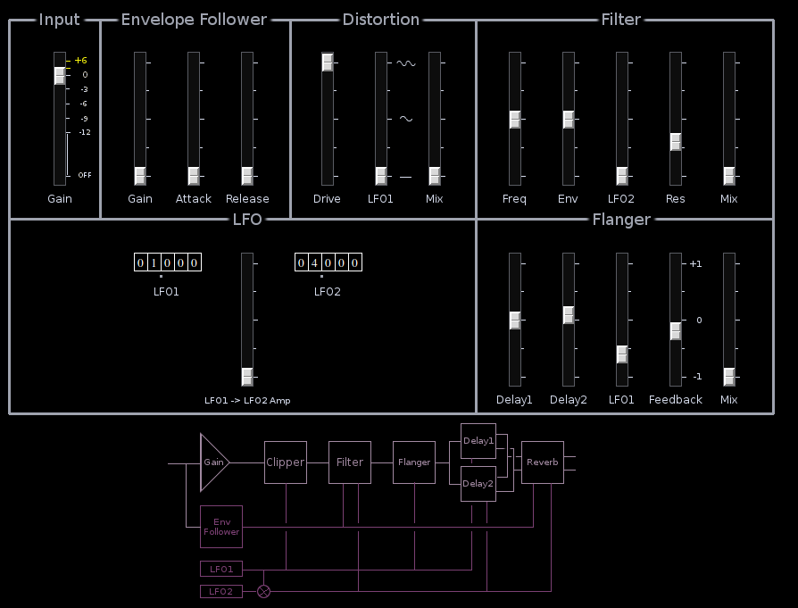
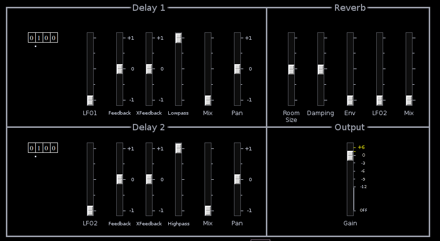

Fxstack

| Home | Contents | Synth Catalog | Previous: Formant Parametric EQ | Next: Galvaniser |
FXstack is an integrated effects stack which combines distortion, filter, flanger, dual delay lines and reverb into a single unit. An envelope follower and two LFOs provide control signals.
 Distortion
The distortion sections applies amplification (drive) to the signal before passing it to a limiting circuit. The limiter output is restrained to ±1 regardless of input amplitude.
The action of the LFO1 slider applies LFO1 to the clipper amplitude. This slider has a non-linear response. Below 50% increasing amounts of LFO1 as a sine wave is applied to clipper modulation. Above 50% a second modulating signal appears. The result is an asymmetric modulation. As the slider approaches 100% the modulator becomes a sine wave with twice the original frequency.
If the drive slider is at minimum the LFO1 slider applies tremolo to the signal with minimal distortion.
The Mix slider sets how much of the clipped signal is mixed with the dry signal. If Mix is at 0 the clipper section is bypassed. The Mix sliders for all other sections operates the same way.
Filter
The filter has a low pass contour whose cutoff may be modulated by either the Envelope Follower or LFO2. If the Mix slider is set to 0 the filter is bypassed.
Flanger
The flanger uses 2 parallel comb filters. These are modulated in tandem by LFO1 but there is a slight offset in the 2 modulating signals. The Delay1 and Delay2 sliders set the initial delay time of the two filters. As with the other effects if the Mix slider is at 0, the flanger is bypassed.
Delay Lines
The two delay lines are nearly identical. The LFO used as modulating source are different between the two delays. LFO1 modulates Delay1, while LFO2 modulates Delay2. They also differ in the type of filter used in the feedback path. For Delay1 the feedback filter is low pass, for Delay2 it is high pass.
The Feedback control of each delay is used to feed it's own signal (after filtering) back to it's input. The XFeedback control injects the output of the opposite delay into the feedback path.
With the Mix slider at 50% the wet and dry signals are mixed equally. At 100% no dry signal appears in the output. The outputs of both delays may be panned across a stereo field.
Reverb
The reverb produces a stereo signal which may be amplitude modulated by either the Envelope Follower or LFO2.
With the Mix slider at 50% the wet and dry signals are mixed equally. At 100% no dry signal appears in the output.
Envelope Follower
The Envelope Follower extract amplitude information from the incoming signal. The result may be used to modulate the Filter cutoff or to gate the reverb. The envelope Follower gain control is separate. The EF gain control is independent of the signal gain and offers up to 40db boost.
LFOs
There are two independent sine-wave LFOs. LFO frequency may be set between 0.001 and 99.999 Hertz. The output of LFO1 may amplitude modulate LFO2.
| Home | Contents | Synth Catalog | Previous: Formant Parametric EQ | Next: Galvaniser |